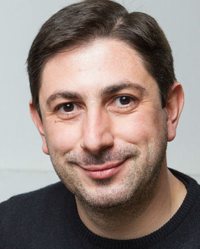
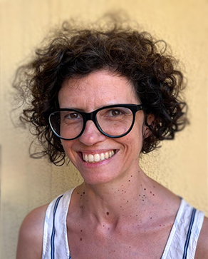
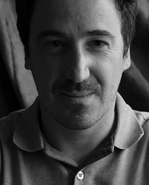

The Bachelor's degree in Audiovisual Communication and Multimedia focuses on comprehensive training, providing students with the skills to respond to multiple areas of creative production. Discover more about the three-act journey of your degree's film.
ACT 1: CONFIGURATION
The Beginning - Learn the theory and practical foundations.
1st Semester - Act I.I
Theory of Photography
History and theoretical basis of photography.
Photographic Practices
Practical photography work from an author's perspective.
Digital Imaging
Basic tools for image creation.
History of Communication Media
Exploring the evolution of media.
Web Applications
How to create and communicate on the web.
2nd Semester - Act I.II
Introduction to Design
Design concepts, color, balance, and readability.
Interaction Design
Concepts of interaction and usability.
Intro to Multimedia Technologies
Discovering the potential of multimedia applications.
Film Theory
Analysis and theory at BATALHA Film Center.
Video and Audio Operations
Professional sound and image capture.
ACT 2: CONFRONTATION
The Middle - Explore different branches of Audiovisual and Multimedia.
1st Semester - Act II.I
Visual Culture
Developing how you observe and analyze images.
Cinematography I
Light control and filming cinematic shots.
Editing and Post-Production
Adapting to editing styles and elevating visual looks.
Screenwriting
Practicing narrative foundations for scripts.
Sound Design
Creating immersive sound environments.
2nd Semester - Act II.II
Multimedia Product Design
Designing effective multimedia experiences.
Acting Direction
In partnership with the Dramatic Arts degree.
Cinematography II
In-depth exploration of short film cinematography.
Economy of Media Culture
Management and economics applied to new media.
Multimedia Technologies
VR, AR, 360 video, and 3D Scanning.
ACT 3: RESOLUTION
The End - Time to witness the climax of the film.
1st Semester - Act III.I
2D Animation
Digital animation and motion graphics potential.
3D Modeling and Animation
Creating three-dimensional objects and worlds.
Contemporary Arts
The current landscape of Contemporary Art.
Scriptwriting
Preparing the script for final course projects.
2nd Semester - Act III.II
Audiovisual Creation Project
Graduate with your most impactful films.
Multimedia Creation Project
Project for exhibition in a Contemporary Art gallery.
Professional Integration Seminar
Preparing for professional life through project or internship.
FACULTY MEMBERS

João Sousa Cardoso
Head of Program - Specialist in Cinema, Arts, and Visual CultureFeatured Works:
- Director of the play "A Ronda da Noite" based on Agustina Bessa Luís at the Calouste Gulbenkian Foundation in 2022, and "Sequências Narrativas Completas", based on Álvaro Lapa, which premiered at Teatro Nacional D. Maria II in 2019.
- Director of the film "Na Selva das Cidade", with André Sousa, based on Bertolt Brecht, shot in São Paulo (Brazil) in 2017, and "A Santa Joana dos Matadouros", based on Bertolt Brecht, screened at Cinemateca Portuguesa (2024).
- Author of the books "TEATRO EXPANDIDO!" (2016), "Sequências Narrativas Completas" and "A Espanha das Espanhas", both in 2020.

João Alves de Sousa
Deputy Head of Program - Specialist in Digital Imaging, Animation, and EditingFeatured Works:
- "Free that Fish" (video game showcased at Comic Con Portugal, Lisbon Games Week, and The Very Big Indie Pitch - Pocket Gamer Connects London, 2015).
- "Lots of Guts" (Winner of Most Innovative Game at the PlayStation Awards Portugal 2015).
- "Porquê" (Animation Winner of the Young Portuguese Filmmaker Award – Cinanima 2006).

Nuno Bernardo
Screenwriter, Director, and ProducerFeatured Works:
- "Gabriel" (Feature film premiered at the Locarno Film Festival 2018).
- "Pianista" (Feature film presented at Motelx 2025).
- "Sofia’s Diary" (Series broadcasted in over 30 countries, Sony Pictures Television).
Marco Ferreira
Head of the Audiovisual Department at Universidade Lusófona do Porto. Specialist in Cinematography and DirectingFeatured Works:
- "A Esperança está onde menos se espera" (Assistant Director and Production, Feature film by Joaquim Leitão).
- "Sweet Valentine" (Assistant Director and Production, Feature film by Emma Luchini).
- Renault, Peugeot, Nestlé (Assistant Director and Production for commercial spots, Filmes Tejo).

José Raimundo
PhD in Digital Media - Specialist in Illustration and 3DFeatured Works:
- Coordinator of the international project Virtual Production Studio Networks.
- "The case of See, Hear, Touch no Evil" and "Bully Who?". Board/digital games (DIGICOM 2018 and 2019).
- Second place at the 4th International Illustration Competition, Treviso, Italy (2016).

Eduardo Magalhães
Lecturer and Researcher - Specialist in Sound Design and Multimedia TechnologiesFeatured Works:
- "Oktoberfest VR" (Winner of the AUREA AWARDS 2026 in the Immersion category).
- "Oktoberfest VR" (Finalist at the XR Awards - AIXR 2026 for Best Game of the Year).
- "Beneath" (Notable nomination for Game of the Year at the Spotlight Awards 2025 and highlighted at the Horror Game Awards 2025).

Rodrigo Carvalho
PhD in Digital Media - Specialist in Digital Art and Motion DesignFeatured Works:
- "30xN" - Audiovisual Performance (SÓNAR, Istanbul; GNRATION, Braga; SERRALVES, Porto; CONVENTO SÃO FRANCISCO, Coimbra; 2024-2026).
- "Vanishing Quasars" - Audiovisual Performance (ELECTROALTERNATIVE, Toulouse; FOTONICA, Rome; CRIATECH, Aveiro; 948MERKABA, Pamplona; MAPPING FESTIVAL, Geneva; VOLUMENS DAY, Valencia; SÓNAR, Lisbon; 2019-2023).
- "Future Sound of Aveiro" (Nomination for the individual award for interactive experience, 2020 CITIC Press Lightening Selection, China).

Andreia Pinto de Sousa
Specialist in Usability and Interaction DesignFeatured Works:
- Researcher at HEI-Lab.
- Researcher in the DoIt4Children and You N Digital projects, among others.
- Co-organizer of the D4Si (Design for Social Impact) Conference.

Hugo Barbosa
Specialist in Web TechnologiesFeatured Works:
- Systems Administrator (Microsoft Windows networks, Linux and Mac OS X networks).
- Database Analyst and Manager: MySql, Oracle, Microsoft SQL Server.
- Researcher in the area of Serious Games, Virtual Reality, Simulation, Player Adaptivity, Cybersecurity, and Computer Networks.

Susana Chiocca
Specialist in Art and PerformanceFeatured Works:
- Solo Exhibitions: "Soluços Sussurros Labaredas", Espaço Mira, Porto (2023); "O regresso à vida do desenho", Galeria do Sol, Porto (2019).
- BITCHO - Author of this performance project combined with video and music (since 2012).
- Artistic works included in the State Contemporary Art Collection and the Porto Municipal Art Collection.

José Maia
Specialist in Contemporary ArtFeatured Works:
- Curator at Bienal da Maia, Bienal de Cerveira, and Bienal de Estremoz, Galeria Quadum, Galeria Municipal do Porto, and Cinema Batalha. Curated film series and performance showcases.
- Artistic Director of Espaço Campanhã (2008-2009) and Espaço MIRA (since 2013).
- Member of the Educational Service team at the Serralves Museum of Contemporary Art (2000-2021) and the Educational Service team at Culturgest Porto.

Pedro Flores
Specialist in Directing and ScreenwritingFeatured Works:
- "Listening to the Silences" (2009), Direction. Selected for International Festivals: IDFA, Busan, Bilbao, Vila do Conde, Yerevan, AFI Silverdocs, Visions du Reel, Kassel, among others. Best Film – Reggio FF 2009; Best Documentary – Magma ISFF 2009; Best Short – Isle of Man FF; Best Documentary – Faial FF 2009; Onda Curta Award – Faial FF 2009.
- "Cinzas, Ensaio sobre o Fogo" (2012), Direction. Selected for International Festivals: Cineport, Del Popoli, Traces de Vie, Go Short, Huesca, and DocLisboa, among others.
- "Pedro e Inês" (2018), 1st Version of the Screenplay. Portuguese film of 2018 with the highest number of viewers. Fantastic Award 2019 for Best Film.

Igor Ramos
Specialist in Graphic DesignFeatured Works:
- Responsible since 2017 for all graphic communication (print and online) for Cinema Trindade.
- Founder of the Portuguese Cinema Poster project (cartazdecinemaportugues.pt).
- Freelance graphic designer specializing in cinema, collaborating with national filmmakers, production companies, and distributors on film communication and projects (such as Oublaum Filmes, "Caronte" by Tânia Gomes Teixeira, "18 Buracos para o Paraíso" by João Nuno Pinto, among others).

Vanessa Rodrigues
Specialist in Audiovisual, DirectorFeatured Works:
- Director and Screenwriter: "O Feitiço de Areia" (82', Portugal/Mozambique, 2025), documentary film: in distribution (2026).
- Director, Producer, and Screenwriter: "Baptismo de Terra" (90', Portugal/Brazil, 2015), documentary film (Special Mention at the Avanca Film Festival, 2017; Terres/Spain Award for Best Soundtrack, 2018; Best Cinematography Award - Hollywood Women's Film Festival, 2019).
- Director and Screenwriter: "Palestina, Diários de um lugar incerto" (37', West Bank/Jordan, 2013), TSF audio-documentary (Honorable Mention, UNESCO Award - Journalism, Integration & Human Rights).